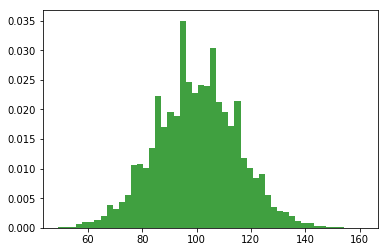

9. Samples, populations and sampling#
Note
This chapter by Todd M. Gureckis and is released under the license for this book. Elements of this chapter are adapted from Matthew Crump’s excellent Answering questions with data book [CNS19] which also draws from from Danielle Navarro’s excellent Learning Statistics with R book [Nav11]. One major change is the code was adapted to use python and jupyter. Additional sections were added about counter balancing and stimulus sampling and WEIRD issues in psychological science.
The role of descriptive statistics is to concisely summarize what we do know. In contrast, the purpose of inferential statistics is to “learn what we do not know from what we do”. What kinds of things would we like to learn about? And how do we learn them? These are the questions that lie at the heart of inferential statistics, and they are traditionally divided into two “big ideas”: estimation and hypothesis testing. The goal in this chapter is to introduce sampling theory first because estimation theory doesn’t make sense until you understand sampling. So, this chapter dives into the issues of using a sample to learn something more general about the world.
Sampling theory plays a huge role in specifying the assumptions upon which your statistical inferences rely. And in order to talk about “making inferences” the way statisticians think about it, we need to be a bit more explicit about what it is that we’re drawing inferences from (the sample) and what it is that we’re drawing inferences about (the population).
In almost every situation of interest, what we have available to us as researchers is a sample of data. We might have run experiment with some number of participants; a polling company might have phoned some number of people to ask questions about voting intentions; etc. Regardless: the data set available to us is finite, and incomplete. We can’t possibly get every person in the world to do our experiment; a polling company doesn’t have the time or the money to ring up every voter in the country etc. In our earlier discussion of descriptive statistics, this sample was the only thing we were interested in. Our only goal was to find ways of describing, summarizing and graphing that sample. This is about to change.
9.1. Defining a population#
A sample is a concrete thing. You can open up a data file, and there’s the data from your sample. A population, on the other hand, is a more abstract idea. It refers to the set of all possible people, or all possible observations, that you want to draw conclusions about, and is generally much bigger than the sample. In an ideal world, the researcher would begin the study with a clear idea of what the population of interest is, since the process of designing a study and testing hypotheses about the data that it produces does depend on the population about which you want to make statements. However, that doesn’t always happen in practice: usually the researcher has a fairly vague idea of what the population is and designs the study as best he/she can on that basis.
Sometimes it’s easy to state the population of interest. For instance, in the “polling company” example, the population consisted of all voters enrolled at the a time of the study – millions of people. The sample was a set of 1000 people who all belong to that population. In most situations the situation is much less simple. Suppose I run an experiment using 100 undergraduate students as my participants. My goal, as a cognitive scientist, is to try to learn something about how the mind works. So, which of the following would count as “the population”:
All of the undergraduate psychology students at New York University?
Undergraduate psychology students in general, anywhere in the world?
Americans currently living?
Americans of similar ages to my sample?
Anyone currently alive?
Any human being, past, present or future?
Any biological organism with a sufficient degree of intelligence operating in a terrestrial environment?
Any intelligent being?
Each of these defines a real group of mind-possessing entities, all of which might be of interest to me as a cognitive scientist, and it’s not at all clear which one ought to be the true population of interest.
9.2. Simple random samples#
Irrespective of how we define the population, the critical point is that the sample is a subset of the population, and our goal is to use our knowledge of the sample to draw inferences about the properties of the population. The relationship between the two depends on the procedure by which the sample was selected. This procedure is referred to as a sampling method, and it is important to understand why it matters.
To keep things simple, imagine we have a bag containing 10 chips. Each chip has a unique letter printed on it, so we can distinguish between the 10 chips. The chips come in two colors, black and white.

Fig. 9.1 Simple random sampling without replacement from a finite population.#
This set of chips is the population of interest, and it is depicted graphically on the left of Fig. 9.1.
As you can see from looking at the picture, there are 4 black chips and 6 white chips, but of course in real life we wouldn’t know that unless we looked in the bag. Now imagine you run the following “experiment”: you shake up the bag, close your eyes, and pull out 4 chips without putting any of them back into the bag. First out comes the $a$ chip (black), then the $c$ chip (white), then $j$ (white) and then finally $b$ (black). If you wanted, you could then put all the chips back in the bag and repeat the experiment, as depicted on the right hand side of Fig. 9.1. Each time you get different results, but the procedure is identical in each case. The fact that the same procedure can lead to different results each time, we refer to it as a random process. However, because we shook the bag before pulling any chips out, it seems reasonable to think that every chip has the same chance of being selected. A procedure in which every member of the population has the same chance of being selected is called a simple random sample. The fact that we did not put the chips back in the bag after pulling them out means that you can’t observe the same thing twice, and in such cases the observations are said to have been sampled without replacement.
To help make sure you understand the importance of the sampling procedure, consider an alternative way in which the experiment could have been run. A 5-year old had opened the bag, and decided to pull out four black chips without putting any of them back in the bag. This biased sampling scheme is depicted in Fig. 9.2.

Fig. 9.2 Biased sampling without replacement from a finite population.#
Now consider the evidentiary value of seeing 4 black chips and 0 white chips. Clearly, it depends on the sampling scheme, does it not? If you know that the sampling scheme is biased to select only black chips, then a sample that consists of only black chips doesn’t tell you very much about the population! For this reason, statisticians really like it when a data set can be considered a simple random sample, because it makes the data analysis much easier.
A third procedure is worth mentioning. This time around we close our eyes, shake the bag, and pull out a chip. This time, however, we record the observation and then put the chip back in the bag. Again we close our eyes, shake the bag, and pull out a chip. We then repeat this procedure until we have 4 chips. Data sets generated in this way are still simple random samples, but because we put the chips back in the bag immediately after drawing them it is referred to as a sample with replacement. The difference between this situation and the first one is that it is possible to observe the same population member multiple times, as illustrated in Fig. 9.3.

Fig. 9.3 Simple random sampling with replacement from a finite population.#
Most psychology experiments tend to be sampling without replacement, because the same person is not allowed to participate in the experiment twice. However, most statistical theory is based on the assumption that the data arise from a simple random sample with replacement. In real life, this very rarely matters. If the population of interest is large (e.g., has more than 10 entities!) the difference between sampling with- and without- replacement is too small to be concerned with. The difference between simple random samples and biased samples, on the other hand, is not such an easy thing to dismiss.
9.3. Most samples are not simple random samples#
As you can see from looking at the list of possible populations that I showed above, it is almost impossible to obtain a simple random sample from most populations of interest. When I run experiments, I’d consider it a minor miracle if my participants turned out to be a random sampling of the undergraduate psychology students at New York University, even though this is by far the narrowest population that I might want to generalize to. A thorough discussion of other types of sampling schemes is beyond the scope of this book, but to give you a sense of what’s out there I’ll list a few of the more important ones:
Stratified sampling. Suppose your population is (or can be) divided into several different sub-populations, or strata. Perhaps you’re running a study at several different sites, for example. Instead of trying to sample randomly from the population as a whole, you instead try to collect a separate random sample from each of the strata. Stratified sampling is sometimes easier to do than simple random sampling, especially when the population is already divided into the distinct strata. It can also be more efficient that simple random sampling, especially when some of the sub-populations are rare. For instance, when studying schizophrenia it would be much better to divide the population into two strata (schizophrenic and not-schizophrenic), and then sample an equal number of people from each group. If you selected people randomly, you would get so few schizophrenic people in the sample that your study would be useless. This specific kind of of stratified sampling is referred to as oversampling because it makes a deliberate attempt to over-represent rare groups.
Snowball sampling is a technique that is especially useful when sampling from a “hidden” or hard to access population, and is especially common in social sciences. For instance, suppose the researchers want to conduct an opinion poll among transgender people. The research team might only have contact details for a few trans folks, so the survey starts by asking them to participate (stage 1). At the end of the survey, the participants are asked to provide contact details for other people who might want to participate. In stage 2, those new contacts are surveyed. The process continues until the researchers have sufficient data. The big advantage to snowball sampling is that it gets you data in situations that might otherwise be impossible to get any. On the statistical side, the main disadvantage is that the sample is highly non-random, and non-random in ways that are difficult to address. On the real life side, the disadvantage is that the procedure can be unethical if not handled well, because hidden populations are often hidden for a reason. I chose transgender people as an example here to highlight this: if you weren’t careful you might end up outing people who don’t want to be outed (very, very bad form), and even if you don’t make that mistake it can still be intrusive to use people’s social networks to study them. It’s certainly very hard to get people’s informed consent before contacting them, yet in many cases the simple act of contacting them and saying “hey we want to study you” can be hurtful. Social networks are complex things, and just because you can use them to get data doesn’t always mean you should.
Convenience sampling is more or less what it sounds like. The samples are chosen in a way that is convenient to the researcher, and not selected at random from the population of interest. Snowball sampling is one type of convenience sampling, but there are many others. A common example in psychology are studies that rely on undergraduate psychology students. These samples are generally non-random in two respects: firstly, reliance on undergraduate psychology students automatically means that your data are restricted to a single sub-population. Secondly, the students usually get to pick which studies they participate in, so the sample is a self selected subset of psychology students not a randomly selected subset. In real life, most studies are convenience samples of one form or another. This is sometimes a severe limitation, but not always.
9.3.1. Example: Issues in Political Polling, Sampling and Bias#
Take a moment here to watch this this fun video by We the Voters “the science of political polling.” After you watch, test your understanding with the questions below:
What is the problem with sampling “likely” voters?
Defining the sample based on a future behavior which might not be accurate
There is no good way to tell if someone is a likely voter
It is not representative.
Click the button to reveal the answer!
The first answer seems more correct. Likely voting behavior is assessed with several questions about political engagement, and often can be checked later to see it is right. However it isn’t perfect. Sometimes a particular candidate is really inspiring to people who otherwise don’t usually vote and they might be missed by trying to sample “likely voters.”
Polls released by a candidate tend to have “spin” favoring their client. Why is that?
the samples might be stratified and weighted in strange ways.
they act as a public relations point
the candidate samples different voters
Click the button to reveal the answer!
All three of these answer might be partially correct. Pollsters have some “flexibility” in how the collect samples. Some pollsters talk of their sampling methods as the “special sauce” that they use to get more accurate and they don’t release information to the public. In those cases several decisions might be made about how a sample is constructed that might slant to favor of a viewpoint. In addition, the way a question is phrased in a survey can influence the answer.
9.4. How much does it matter if you don’t have a simple random sample?#
Okay, so real world data collection tends not to involve nice simple random samples. Does that matter? A little thought should make it clear to you that it can matter if your data are not a simple random sample: just think about the difference between Figures Fig. 9.1 and Fig. 9.2. However, it’s not quite as bad as it sounds. Some types of biased samples are entirely unproblematic. For instance, when using a stratified sampling technique you actually know what the bias is because you created it deliberately, often to increase the effectiveness of your study, and there are statistical techniques that you can use to adjust for the biases you’ve introduced (not covered in this book!). So in those situations it’s not a problem.
More generally though, it’s important to remember that random sampling is a means to an end, not the end in itself. Let’s assume you’ve relied on a convenience sample, and as such you can assume it’s biased. A bias in your sampling method is only a problem if it causes you to draw the wrong conclusions. When viewed from that perspective, I’d argue that we don’t need the sample to be randomly generated in every respect: we only need it to be random with respect to the psychologically-relevant phenomenon of interest. Suppose I’m doing a study looking at working memory capacity. In study 1, I actually have the ability to sample randomly from all human beings currently alive, with one exception: I can only sample people born on a Monday. In study 2, I am able to sample randomly from the New York City population. I want to generalize my results to the population of all living humans. Which study is better? The answer, obviously, is study 1. Why? Because we have no reason to think that being “born on a Monday” has any interesting relationship to working memory capacity. In contrast, I can think of several reasons why “being a New Yorker” might matter. New York City is a wealthy, industrialized city with a very well-developed education system. People growing up in that system will have had life experiences much more similar to the experiences of the people who designed the tests for working memory capacity. This shared experience might easily translate into similar beliefs about how to “take a test”, a shared assumption about how psychological experimentation works, and so on. These things might actually matter. For instance, “test taking” style might have taught the New York City participants how to direct their attention exclusively on fairly abstract test materials relative to people that haven’t grown up in a similar environment; leading to a misleading picture of what working memory capacity is.
There are two points hidden in this discussion. Firstly, when designing your own studies, it’s important to think about what population you care about, and try hard to sample in a way that is appropriate to that population. In practice, you’re usually forced to put up with a “sample of convenience” (e.g., psychology lecturers sample psychology students because that’s the least expensive way to collect data, and our coffers aren’t exactly overflowing with gold), but if so you should at least spend some time thinking about what the dangers of this practice might be.
Secondly, if you’re going to criticize someone else’s study because they’ve used a sample of convenience rather than laboriously sampling randomly from the entire human population, at least have the courtesy to offer a specific theory as to how this might have distorted the results. Remember, everyone in science is aware of this issue, and does what they can to alleviate it. Merely pointing out that “the study only included people from group BLAH” is entirely unhelpful, and borders on being insulting to the researchers, who are aware of the issue. They just don’t happen to be in possession of the infinite supply of time and money required to construct the perfect sample. In short, if you want to offer a responsible critique of the sampling process, then be helpful. Rehashing the blindingly obvious truisms that I’ve been rambling on about in this section isn’t helpful.
9.5. WEIRD Samples in Psychological Research#
One important consequence of psychologists working in universities depending on “convenience samples” is that almost all published research on human thinking, reasoning, visual perception, memory, IQ, etc… have been conducted on people from what [HHN10] call Western, educated, industrialized, rich, and democratic (WEIRD) societies. Under some accounts American undergraduate students are among the “WEIRD”est people in the world (no offense). There are several reasons to think that conclusions drawn from research utilizing WEIRD samples does not generalize to the rest of the world. For example, other cultures have different emphases on moral reasoning, the use of analytical reasoning, and even subtle differences in perception ([HHN10]).
The concern about this has lead to attempt to create more diverse samples in psychological research including cross cultural studies of cognition and perception, as well as research using the Internet to collect more diverse samples than simple American undergraduates (although admittedly Internet based research may mimic some aspect of the WIERDness of college students).
This is a huge problem and blends with several other types of biases. However, this is also positive because the recognition of these issues has resulted in entire new fields of psychological research focused on cross-cultural psychology. In the end it is interesting to note that given the cost of collecting samples, the field has not moved to randomly sampling across countries and cultures. Instead, what has happened is that people are effectively stratifying their samples by repeating experiments multiple times in different parts of the world and checking if the results line up. Some do and some don’t and together they give us a better picture about the nature of human cognition and perception - specifically which things are seemingly cognitive universals (shared by almost all humans) and which are strongly influenced by culture.
9.6. Sampling stimuli#
In the discussion so far we have talked about samples applying to people. We sample from the population of “humans” by recruiting small subsets of humans to take part in our study. However in many experiment designs we also have to sample stimuli.
For example, imagine a study on lexical decision making. In such experiments, participants are shown letter string that either form words (e.g., “DOG”) or non words (e.g., “XUNFM”) and we measure the time to make the word or non-word judgment. Often times people are faster with word judgments for familiar or frequent words, etc… However, we can’t possibly show each subject every known English word and ever possible non-word string. Instead we have to sample a subset of words and show them to participants. This causes a second generalization problem because often we want to know about how a population of humans reacts to a population of stimuli. We sample both the people we test but also the stimuli we can practically to show in an experiment.
How do we deal with the sampling of stimuli?
In an ideal case we apply the same logic as above - we can use simple random sampling to determine stimuli. For example, if we had a very large dictionary of English words we could use the computer to pseudo-randomly select a word to show on each trial. However, in many experiments listing all possible stimuli is not possible. For example, we can’t randomly sample from all possible photographs of a dog. In these cases we, the experimenter, usually select a set of stimuli to use in the experiment. This is a bit akin to the “convienience sampling” idea. Perhaps we have a database on images and so we will sample from that.
Alternatively we can take something akin to a “stratified” sampling approach where we specifically choose stimuli that vary in certain ways. For instance in a lexical decision task we might choose several words that are low, medium, and high frequency in the language. We might then show each subject an even number of those stimuli and record their reaction time. At the end of the study we might be interested in median reaction time as a function of these categories. However, we would need to remember that even if reaction time is faster for high frequency words, we can’t necessarily generalize to the statement that “people respond faster to high frequency words” because our experiment would have only included a subset of all possible high frequency words, not randomly sampled words, and even discretized the variable “frequency” into three bin (low, medium, high).
There are several interesting issues involved in the statistical analysis of experiments where stimuli are also randomly sampled from a distribution [Cla73, WNY17].
9.6.1. Random Sampling of “extraneous experiment details”#
Another place the issue of sampling comes up is with respect to all other aspects of an experiment that you have to specify but aren’t really committed to. For instance, what color is the font? Is the ‘yes’ button on the left or right of the ‘no’ button? Is the text in 12pt font or 16 pt font. All of these variables could have an effect, although intuition says they are unlikely to be systematically biasing the results for most experiments. The problem with social sciences and psychology in general is that the number of the “other” variables is huge. One approach is just to set them to reasonable values (e.g., make a font clear and readable by most people) and ensure that the setting doesn’t change across different treatments in your experiment. Another approach is – you guessed it – simple random assignment. You can essentially randomly sample a color or randomly sample a font size for each subject so that this variable will “wash out” across many participants. Generally speaking most people just set these variables to a fixed value because the choices here rarely have a substantial effect (this is not to say they have no effect… if you make the font so small noone can read the instructions, then you probably will observe a change in behavior). However, rarely is the question “how does font size affect cognition?” but instead questions like “what is the effect of working memory load on performance in a learning task?” in which case one doesn’t expect font size to be the most important possible confound.
9.7. Population parameters and sample statistics#
Up to this point we have been talking about populations the way a scientist might. To a psychologist, a population might be a group of people. To an ecologist, a population might be a group of bears. In most cases the populations that scientists care about are concrete things that actually exist in the real world.
Statisticians, however, are a funny lot. On the one hand, they are interested in real world data and real science in the same way that scientists are. On the other hand, they also operate in the realm of pure abstraction in the way that mathematicians do. As a consequence, statistical theory tends to be a bit abstract in how a population is defined. In much the same way that psychological researchers operationalize our abstract theoretical ideas in terms of concrete measurements, statisticians operationalize the concept of a “population” in terms of mathematical objects that they know how to work with.
The idea is quite simple. Let’s say we’re talking about IQ scores. To a psychologist, the population of interest is a group of actual humans who have IQ scores. A statistician “simplifies” this by operationally defining the population as the probability distribution depicted in Fig. 9.4a.

Fig. 9.4 The population distribution of IQ scores (panel a) and two samples drawn randomly from it. In panel b we have a sample of 100 observations, and panel c we have a sample of 10,000 observations.#
IQ tests are designed so that the average IQ is 100, the standard deviation of IQ scores is 15, and the distribution of IQ scores is normal. These values are referred to as the population parameters because they are characteristics of the entire population. That is, we say that the population mean $\mu$ is 100, and the population standard deviation $\sigma$ is 15.
Now suppose we collect some data. We select 100 people at random and administer an IQ test, giving a simple random sample from the population. The sample would consist of a collection of numbers like this:
106 101 98 80 74 ... 107 72 100
Each of these IQ scores is sampled from a normal distribution with mean 100 and standard deviation 15. So if I plot a histogram of the sample, I get something like the one shown in Fig. 9.4b. As you can see, the histogram is roughly the right shape, but it’s a very crude approximation to the true population distribution shown in Fig. 9.4a. The mean of the sample is fairly close to the population mean 100 but not identical. In this case, it turns out that the people in the sample have a mean IQ of 98.5, and the standard deviation of their IQ scores is 15.9. These sample statistics are properties of the data set, and although they are fairly similar to the true population values, they are not the same. In general, sample statistics are the things you can calculate from your data set, and the population parameters are the things you want to learn about. Later we’ll talk about how you can estimate population parameters using your sample statistics and how to work out how confident you are in your estimates but before we get to that there’s a few more ideas in sampling theory that you need to know about.
9.8. The law of large numbers#
We just looked at the results of one fictitious IQ experiment with a sample size of $N=100$. The results were somewhat encouraging: the true population mean is 100, and the sample mean of 98.5 is a pretty reasonable approximation to it. In many scientific studies that level of precision is perfectly acceptable, but in other situations you need to be a lot more precise. If we want our sample statistics to be much closer to the population parameters, what can we do about it?
The obvious answer is to collect more data. Suppose that we ran a much larger
experiment, this time measuring the IQ’s of 10,000 people. We can simulate the
results of this experiment using Python, using the numpy normal() function
which I usually import from the numppy.random submodule using
import numpy.random as npr, which generates random numbers sampled from a
normal distribution. For an experiment with a sample size of size = 10000,
and a population with loc = 100 (i.e, the location of the mean) and
sd = 15 (referred to as scale here), python produces our fake IQ data using
these commands:
import numpy as np
import numpy.random as npr
IQ = npr.normal(loc=100,scale=15,size=10000) # generate iq scores
IQ = np.round(IQ, decimals=0)
Cool, we just generated 10,000 fake IQ scores. Where did they go? Well, they went into the variable IQ on my computer. You can do the same on your computer too by copying the above code. 10,000 numbers is too many numbers to look at. We can look at the first 100 like this:
print(IQ[1:100])
[ 92. 93. 127. 109. 110. 110. 98. 109. 104. 97. 76. 89. 85. 129.
99. 104. 111. 110. 99. 97. 111. 94. 111. 103. 92. 97. 105. 80.
78. 98. 108. 79. 83. 108. 92. 111. 99. 96. 105. 81. 92. 105.
99. 114. 118. 104. 116. 119. 100. 100. 100. 82. 96. 80. 72. 114.
119. 110. 114. 105. 74. 96. 114. 112. 104. 114. 103. 100. 100. 71.
83. 114. 96. 113. 99. 102. 103. 85. 103. 111. 81. 112. 125. 106.
86. 115. 68. 101. 114. 100. 73. 100. 121. 101. 95. 107. 104. 94.
82.]
We can compute the mean IQ using the command np.mean(IQ) and the standard
deviation using the command np.std(IQ), and draw a histogram using
plt.hist().
print(np.mean(IQ))
print(np.std(IQ))
n, bins, patches = plt.hist(IQ, 50, density=True, facecolor='g', alpha=0.75)
100.0015
15.05928609695692

The histogram of this much larger sample is shown in Figure above. Even a moment’s inspections makes clear that the larger sample is a much better approximation to the true population distribution than the smaller one. This is reflected in the sample statistics: the mean IQ for the larger sample turns out to be 99.9, and the standard deviation is 15.1. These values are now very close to the true population.
I feel a bit silly saying this, but the thing I want you to take away from this is that large samples generally give you better information. The question is, why is this so? Not surprisingly, this intuition that we all share turns out to be correct, and statisticians refer to it as the law of large numbers. The law of large numbers is a mathematical law that applies to many different sample statistics, but the simplest way to think about it is as a law about averages. The sample mean is the most obvious example of a statistic that relies on averaging (because that’s what the mean is… an average), so let’s look at that. When applied to the sample mean, what the law of large numbers states is that as the sample gets larger, the sample mean tends to get closer to the true population mean. Or, to say it a little bit more precisely, as the sample size “approaches” infinity (written as $N \rightarrow \infty$) the sample mean approaches the population mean ($\bar{X} \rightarrow \mu$).
I don’t intend to subject you to a proof that the law of large numbers is true, but it’s one of the most important tools for statistical theory. The law of large numbers is the thing we can use to justify our belief that collecting more and more data will eventually lead us to the truth. For any particular data set, the sample statistics that we calculate from it will be wrong, but the law of large numbers tells us that if we keep collecting more data those sample statistics will tend to get closer and closer to the true population parameters.
9.9. Estimating aspects of the population#
So far we have talked about sampling from a population – the reasons we do it, how to do it, etc… Given a sample we use compute various descriptive statistics (covered in the previous chapter) that characterize the central tendency or variability of the sample. However, while descriptive statistics are nice they are usually not what we want to know when we conduct a research study. Instead we are interested in estimation of aspects (we’ll call them parameters) of the population.
Suppose we go to Brooklyn and 100 of the locals are kind enough to sit through an IQ test. The average IQ score among these people turns out to be $\bar{X}=98.5$. Although it is nice to know that this specific group of people has this average IQ that isn’t very general. Can we say anything more broad? Like given this information what is the true mean IQ for the entire population of Brooklyn? Obviously, we don’t know the answer to that question. It could be $97.2$, but if could also be $103.5$. Our sampling isn’t exhaustive so we cannot give a definitive answer. Nevertheless if forced to give a “best guess” we’d probably have to say $98.5$. That’s the essence of statistical estimation: giving a best guess. We’re using the sample mean as the best guess of the population mean.
For the moment let’s make sure you recognize that the sample statistic and the estimate of the population parameter are conceptually different things. A sample statistic is a description of your data, whereas the estimate is a guess about the population. With that in mind, statisticians often use different notation to refer to them. For instance, if true population mean is denoted $\mu$, then we would use $\hat\mu$ to refer to our estimate of the population mean. In contrast, the sample mean is denoted $\bar{X}$ or sometimes $m$. However, in simple random samples, the estimate of the population mean is identical to the sample mean: if I observe a sample mean of $\bar{X} = 98.5$, then my estimate of the population mean is also $\hat\mu = 98.5$. To help keep the notation clear, here’s a handy table:
Symbol |
What is it? |
Do we know what it is? |
|---|---|---|
$\bar{X}$ |
Sample mean |
Yes, calculated from the raw data |
$\mu$ |
True population mean |
Almost never known for sure |
$\hat{\mu}$ |
Estimate of the population mean |
Yes, identical to the sample mean |
9.9.1. Estimating the standard deviation of the population#
In the case of the mean, our estimate of the population parameter (i.e. $\hat\mu$) turned out to identical to the corresponding sample statistic (i.e. $\bar{X}$). However, that’s not always true. To see this, let’s have a think about how to construct an estimate of the population standard deviation, which we’ll denote $\hat\sigma$. What shall we use as our estimate in this case? Your first thought might be that we could do the same thing we did when estimating the mean, and just use the sample statistic as our estimate. That’s almost the right thing to do, but not quite.
Here’s why. Suppose I have a sample that contains a single observation. For this example, it helps to consider a sample where you have no intuitions at all about what the true population values might be, so let’s use something completely fictitious. Suppose the observation in question measures the cromulence of my shoes. It turns out that my shoes have a cromulence of 20. So here’s my sample:
20
This is a perfectly legitimate sample, even if it does have a sample size of $N=1$. It has a sample mean of 20, and because every observation in this sample is equal to the sample mean (obviously!) it has a sample standard deviation of 0. As a description of the sample this seems quite right: the sample contains a single observation and therefore there is no variation observed within the sample. A sample standard deviation of $s = 0$ is the right answer here. But as an estimate of the population standard deviation, it feels completely insane, right? Admittedly, you and I don’t know anything at all about what “cromulence” is, but we know something about data: the only reason that we don’t see any variability in the sample is that the sample is too small to display any variation! So, if you have a sample size of $N=1$, it feels like the right answer is just to say “no idea at all”.
Notice that you don’t have the same intuition when it comes to the sample mean and the population mean. If forced to make a best guess about the population mean, it doesn’t feel completely insane to guess that the population mean is 20. Sure, you probably wouldn’t feel very confident in that guess, because you have only the one observation to work with, but it’s still the best guess you can make.
Let’s extend this example a little. Suppose I now make a second observation. My data set now has $N=2$ observations of the cromulence of shoes, and the complete sample now looks like this:
20, 22
This time around, our sample is just large enough for us to be able to observe some variability: two observations is the bare minimum number needed for any variability to be observed! For our new data set, the sample mean is $\bar{X}=21$, and the sample standard deviation is $s=1$. What intuitions do we have about the population? Again, as far as the population mean goes, the best guess we can possibly make is the sample mean: if forced to guess, we’d probably guess that the population mean cromulence is 21. What about the standard deviation? This is a little more complicated. The sample standard deviation is only based on two observations, and if you’re at all like me you probably have the intuition that, with only two observations, we haven’t given the population “enough of a chance” to reveal its true variability to us. It’s not just that we suspect that the estimate is wrong: after all, with only two observations we expect it to be wrong to some degree. The worry is that the error is systematic.
If the error is systematic, that means it is biased. For example, imagine if the sample mean was always smaller than the population mean. If this was true (it’s not), then we couldn’t use the sample mean as an estimator. It would be biased, we’d be using the wrong number.
It turns out the sample standard deviation is a biased estimator of the population standard deviation. We can sort of anticipate this by what we’ve been discussing. When the sample size is 1, the standard deviation is 0, which is obviously to small. When the sample size is 2, the standard deviation becomes a number bigger than 0, but because we only have two sample, we suspect it might still be too small. Turns out this intuition is correct.
It would be nice to demonstrate this somehow. There are in fact mathematical
proofs that confirm this intuition, but unless you have the right mathematical
background they don’t help very much. Instead, what I’ll do is use Python to
simulate the results of some experiments. With that in mind, let’s return to
our IQ studies. Suppose the true population mean IQ is 100 and the standard
deviation is 15. I can use the npr.normal()* function to generate the the
results of an experiment in which I measure $N=2$ IQ scores, and calculate the
sample standard deviation. If I do this over and over again, and plot a
histogram of these sample standard deviations, what I have is the sampling
distribution of the standard deviation. I’ve plotted this distribution in
Fig. 9.5.

Fig. 9.5 The sampling distribution of the sample standard deviation for a two IQ scores experiment. The true population standard deviation is 15 (dashed line), but as you can see from the histogram, the vast majority of experiments will produce a much smaller sample standard deviation than this. On average, this experiment would produce a sample standard deviation of only 8.5, well below the true value! In other words, the sample standard deviation is a biased estimate of the population standard deviation.#
Even though the true population standard deviation is 15, the average of the sample standard deviations is only 8.5. Now let’s extend the simulation. Instead of restricting ourselves to the situation where we have a sample size of $N=2$, let’s repeat the exercise for sample sizes from 1 to 10. If we plot the average sample mean and average sample standard deviation as a function of sample size, you get the following results.
Fig. 9.6 shows the sample mean as a function of sample size. Notice it’s a flat line. The sample mean doesn’t underestimate or overestimate the population mean. It is an unbiased estimate!

Fig. 9.6 An illustration of the fact that the sample mean is an unbiased estimator of the population mean.#
Fig. 9.7 shows the sample standard deviation as a function of sample size. Notice it is not a flat line. The sample standard deviation systematically underestimates the population standard deviation!

Fig. 9.7 An illustration of the fact that the the sample standard deviation is a biased estimator of the population standard deviation.#
In other words, if we want to make a “best guess” ($\hat\sigma$, our estimate of the population standard deviation) about the value of the population standard deviation $\sigma$, we should make sure our guess is a little bit larger than the sample standard deviation $s$.
The fix to this systematic bias turns out to be very simple. Here’s how it works. Before tackling the standard deviation, let’s look at the variance. If you recall from the second chapter, the sample variance is defined to be the average of the squared deviations from the sample mean. That is:
$s^2 = \frac{1}{N} \sum_{i=1}^N (X_i - \bar{X})^2$
The sample variance $s^2$ is a biased estimator of the population variance $\sigma^2$. But as it turns out, we only need to make a tiny tweak to transform this into an unbiased estimator. All we have to do is divide by $N-1$ rather than by $N$. If we do that, we obtain the following formula: $\hat\sigma^2 = \frac{1}{N-1} \sum_{i=1}^N (X_i - \bar{X})^2$ This is an unbiased estimator of the population variance $\sigma$.
A similar story applies for the standard deviation. If we divide by $N-1$ rather than $N$, our estimate of the population standard deviation becomes: $\hat\sigma = \sqrt{\frac{1}{N-1} \sum_{i=1}^N (X_i - \bar{X})^2}$.
It is worth pointing out that software programs make assumptions for you, about which variance and standard deviation you are computing. Some programs automatically divide by $N-1$, some do not. You need to check to figure out what they are doing. Don’t let the software tell you what to do. Software is for you telling it what to do.m
One final point: in practice, a lot of people tend to refer to $\hat{\sigma}$ (i.e., the formula where we divide by $N-1$) as the sample standard deviation. Technically, this is incorrect: the sample standard deviation should be equal to $s$ (i.e., the formula where we divide by $N$). These aren’t the same thing, either conceptually or numerically. One is a property of the sample, the other is an estimated characteristic of the population. However, in almost every real life application, what we actually care about is the estimate of the population parameter, and so people always report $\hat\sigma$ rather than $s$.
9.10. References#
H.H. Clark. The language-as-fixed-effect fallacy: a critique of language statistics. Journal of Verbal Learning and Verbal Behavior, 16(6):335–359, 1973.
M.J.C. Crump, D. Navarro, and J. Suzuki. Answering Questions with Data (Textbook): Introductory Statistics for Psychology Students. 2019. doi:https://doi.org/10.17605/OSF.IO/JZE52.
D. Navarro. Learning Statistics with R. 2011. URL: https://learningstatisticswithr.com.
J. Westfall, T.E. Nichols, and T. Yarkoni. Fixing the stimulus-as-fixed-effect fallacy in task fmri. Wellcome Open Reearch, pages 1–23, 2017.